Saturday 19 September 2026 · Hambledon Vineyard
Run for the hills.
Eat and drink at the Vineyard.
2026 Race Report
New routes, new faces, same old Hambledon vibes
Records are made to be broken, but not easily achieved. After 11 years, the Hambledon Hilly team confidently declared that the latest event on 19 September was the finest ever.
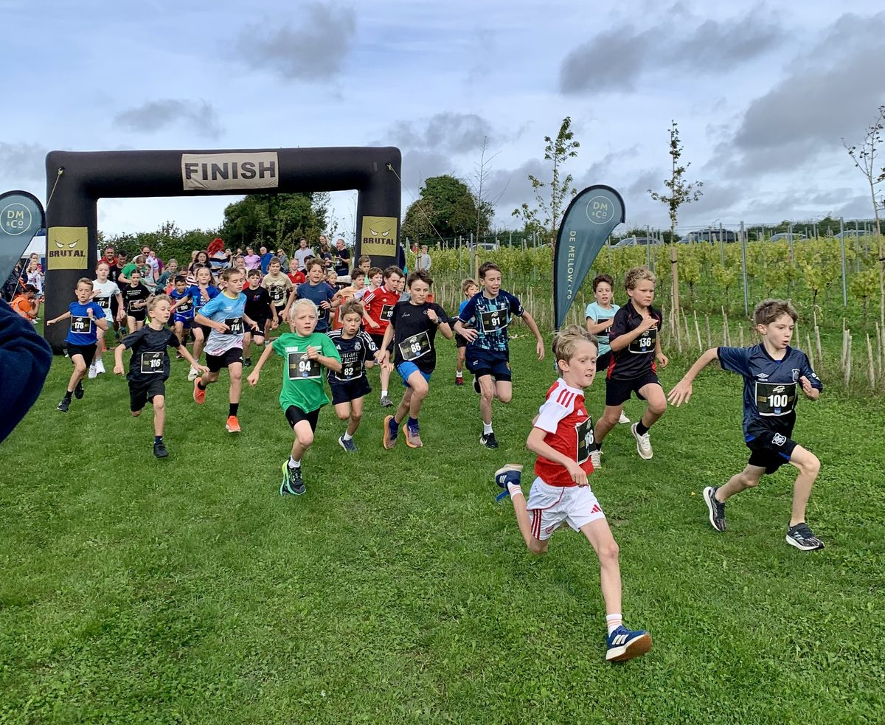
A new timing system and finishing line brought a new level of professionalism to the event. Well over 320 runners demonstrated that we could attract racers from the village, the vicinity and much further afield.
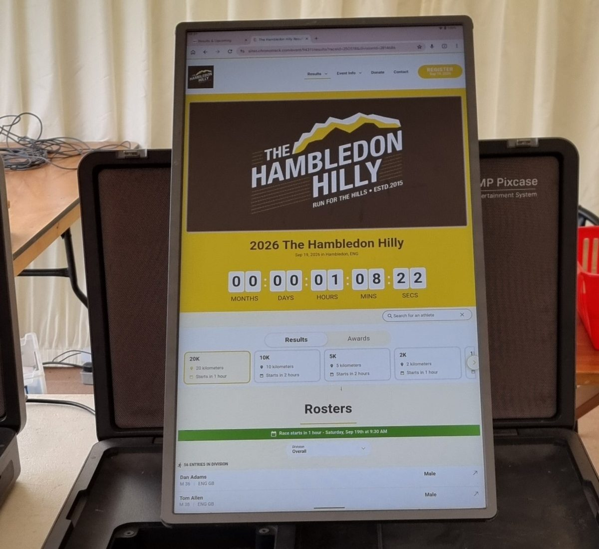
Even in windy conditions, runners battled through the new giant 20km circuit, taking in Winchester Hill and Meon Springs along the way. New routes for the 10km and 5km included longer sections in the vineyard itself and a challenging descent through Speltham Down. The 10km runners, though, still had to endure the infamous Glidden Lane climb.
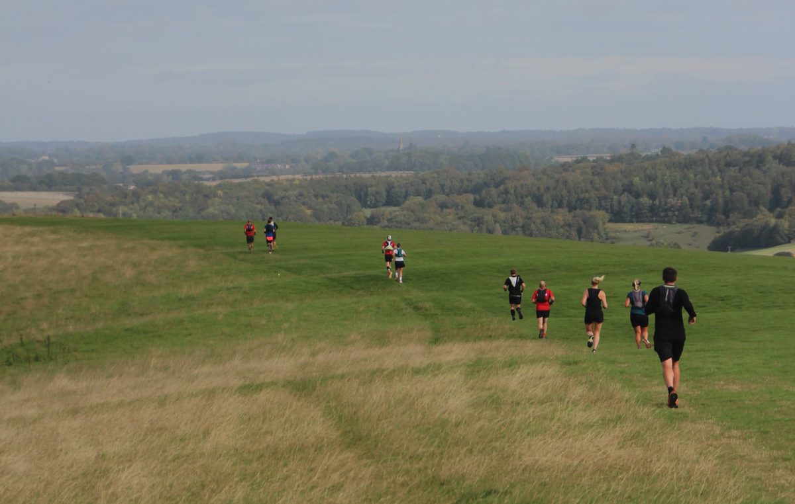
At race headquarters up at the Hambledon Vineyard marquee, the vineyard team served breakfast baps, followed by exquisite pulled pork buns. The Friends of Hambledon raised £340 for Hambledon Primary by selling beer and soft drinks kindly donated by Bowmans Ales and Hartridges Soft Drinks. Our charity partner Brain Tumour Research raised hundreds of pounds thanks to some incredibly generous donations.
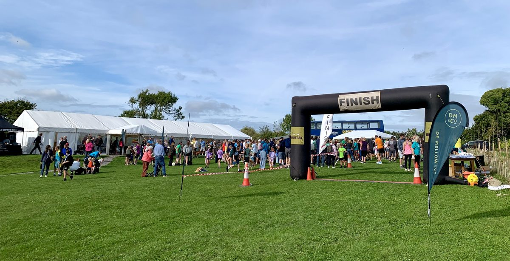
As always, dozens of Hambledon villagers turned out to help with the event, ensuring that everything went smoothly and all runners were ushered in the right direction.
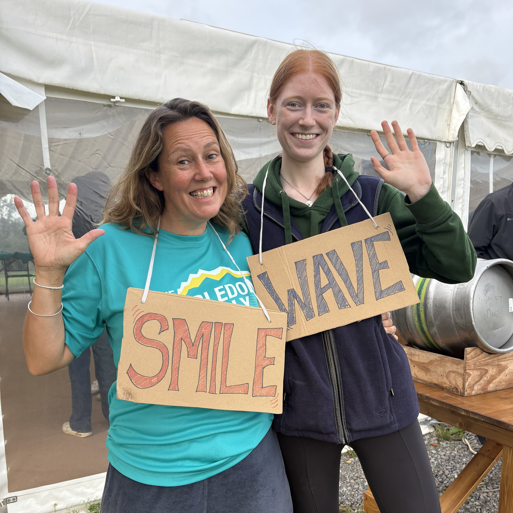
A huge thanks to De Mellow & Co for providing incredible support in the lead up to and throughout the event itself, particularly Mark Watkiss, Freya Stanger and Alona Bondarenko. Thanks also to The Country House Company for continuing to support the running numbers.
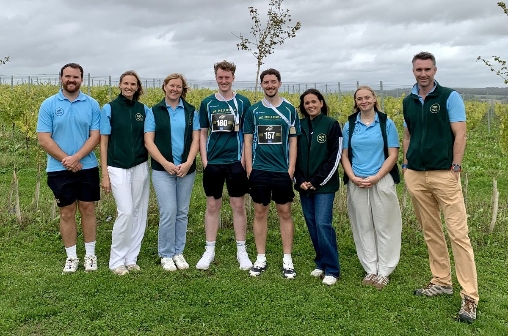
Enormous gratitude to Harry Austin and the Hambledon Vineyard team for hosting the event and looking after us with incredible food and drink, and for donating bottles of Hambledon Classic Cuvée for the race winners.


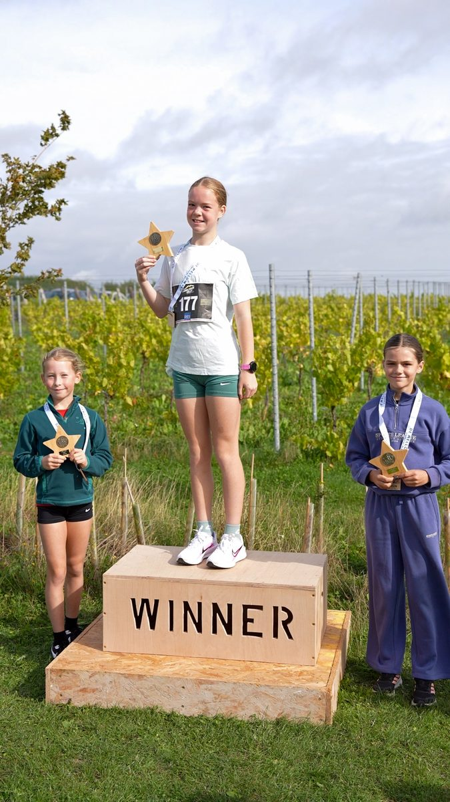
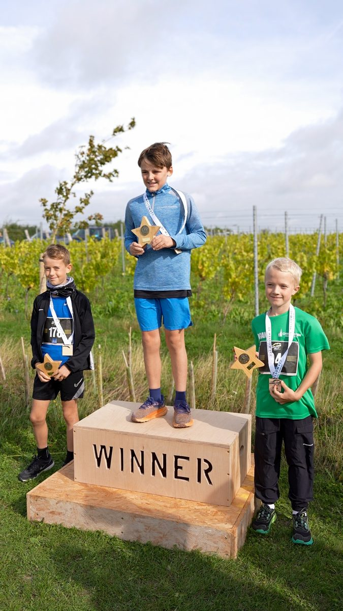
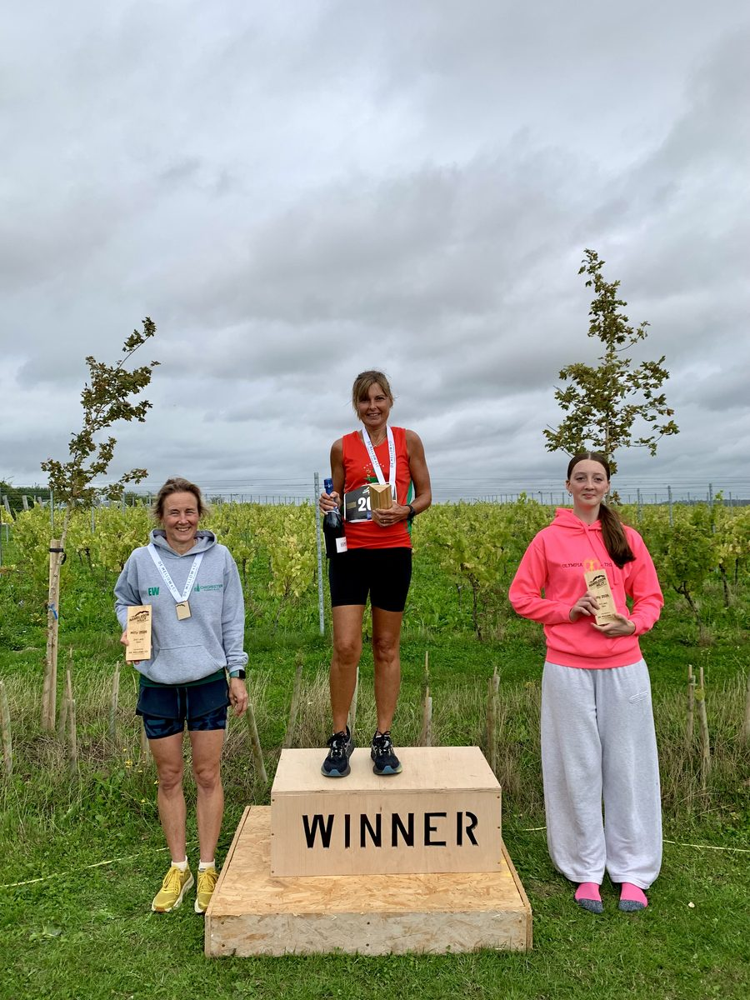
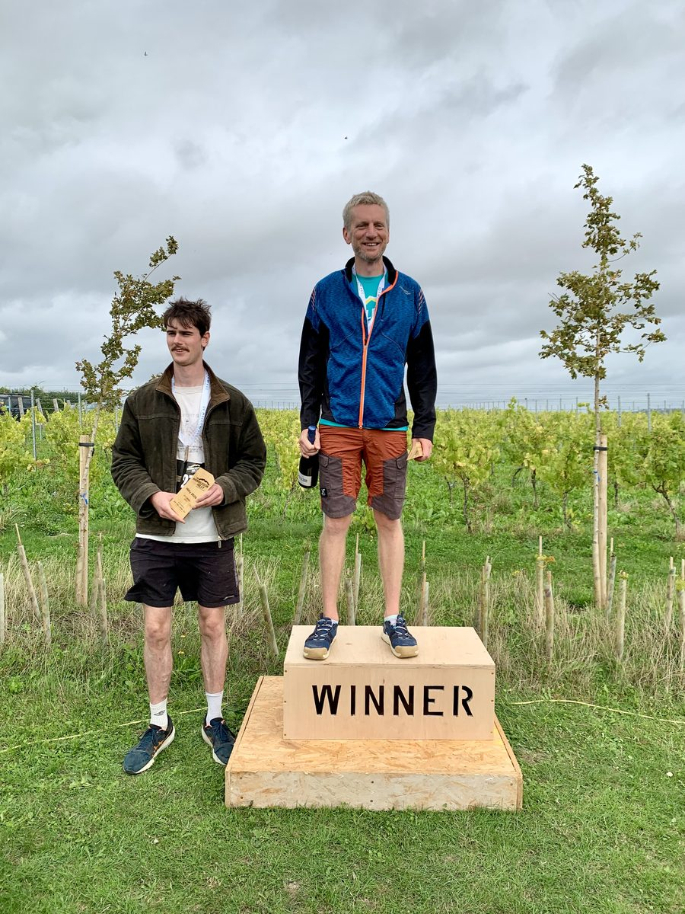
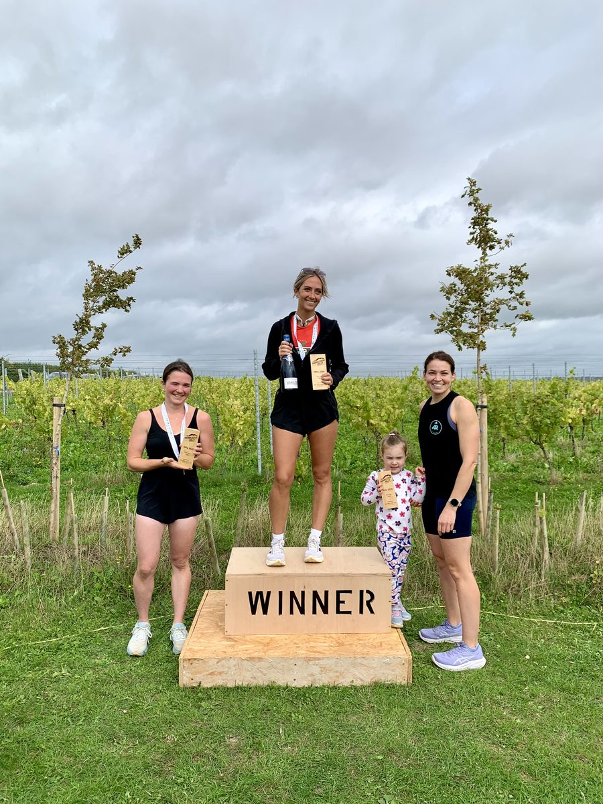
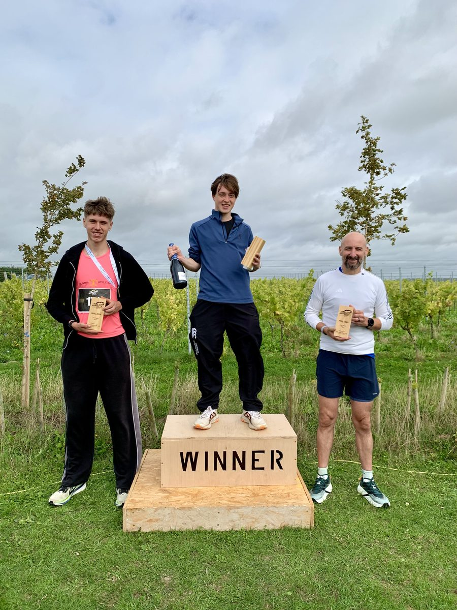
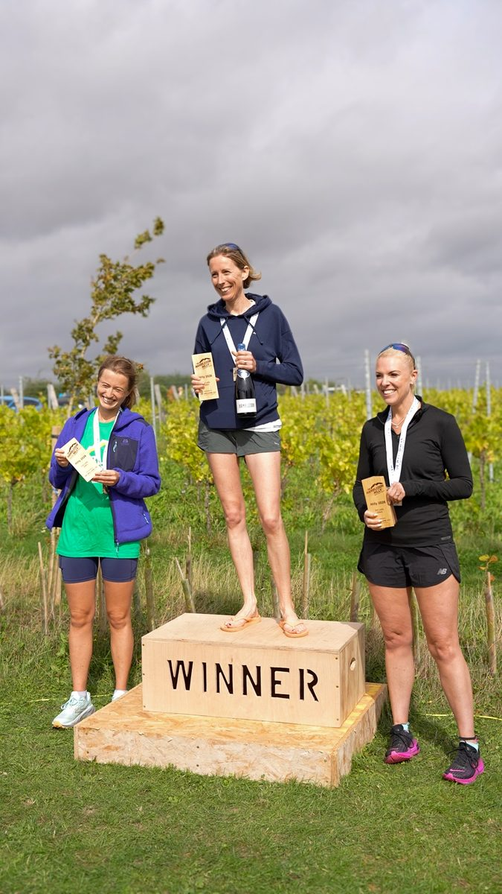

We’re looking forward to expanding the event once again in 2027.
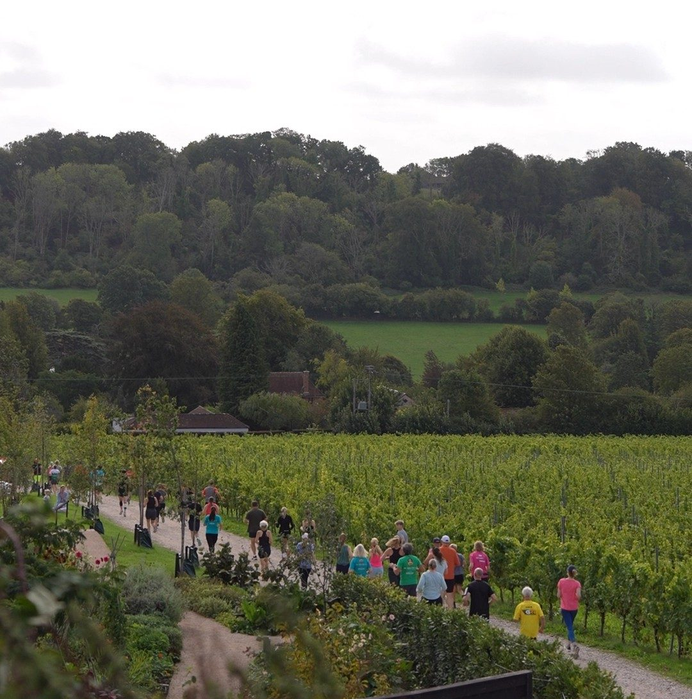
Highlights
Watch the 2026 highlights video and browse a selection of photos from this year’s race.

Getting There
Race HQ is based at Hambledon Vineyard, home to England's oldest commercial vineyard, in the heart of the Hampshire countryside. Race HQ itself is in the big white marquee behind the Vineyard Restaurant.
Hambledon VineyardHambledon
Hampshire
PO7 4RY
what3words: rezoning.pulsing.swift
Parking is available on the estate and marshals will direct you on arrival.